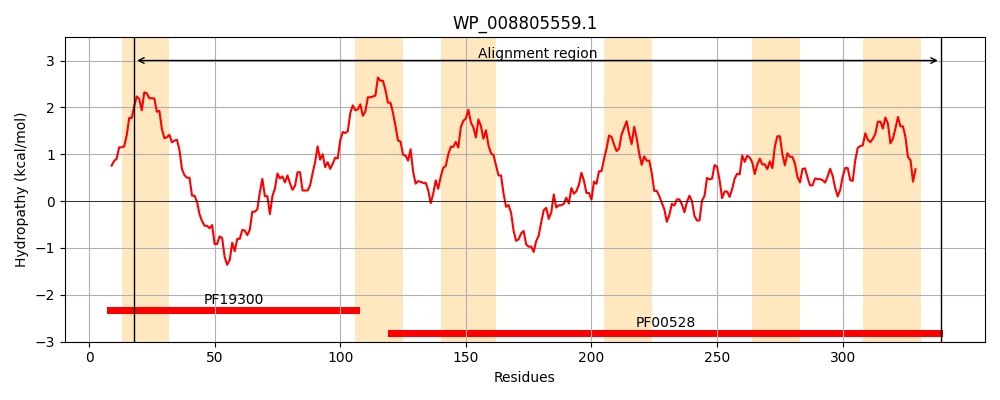
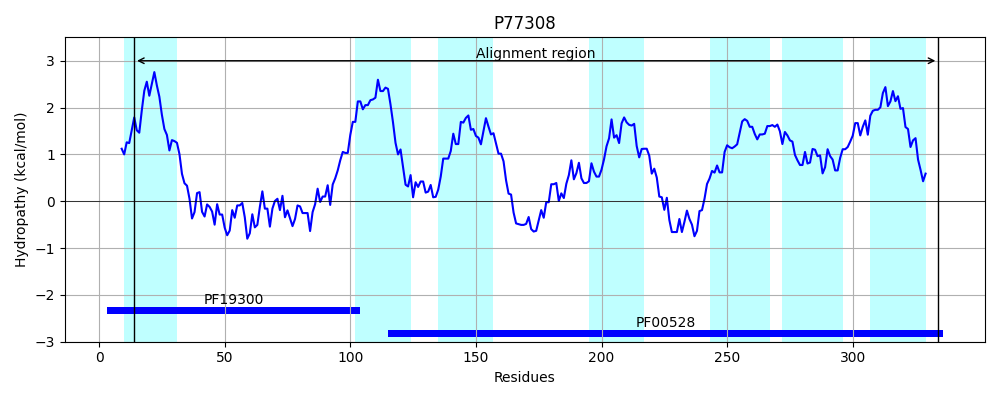
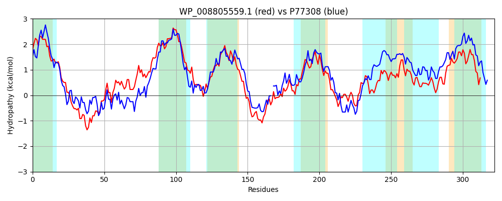

Hit Accession: P77308
Hit TCID: 3.A.1.5.38
Hit Description: gnl|BL_ORD_ID|11500 gnl|TC-DB|P77308|3.A.1.5.38 Probable D,D-dipeptide transport system permease protein DdpB OS=Escherichia coli (strain K12) GN=ddpB PE=1 SV=1
Mach Len: 322
e:0.000000
Query TMS Count : 6
Hit TMS Count: 7
TMS-Overlap Score: 5.750000
Predicted Substrates:CHEBI:72816;L-alanyl-L-alanine
BLAST Alignment:
Score: 652 , Bit scores: 255 bits, E-value: 2.3e-83, Alignment length: 322, Percentage identity: 44
Query: 18 LLLTLFGLLLVTFSLSALSPVDRVLQIVGDHASQSTYDQVRHQLGLDQPLPVQFWHYLVNLAHGDLGIASATGQPVLHDLLAVFPATLELATLALIVGAVLGIVAGVLCARYAGSPWDLAVRTFTLLGNSVPIFWLGLLMLALFYARLQWAPGPGRLDDIYQYTVEPRSGFALIDTWLSGDTAAFKNAIGHLALPVLVLAYYSLASITRLTRSACLSEMNKEYILLARAKGAGEMTILLRHVLPNIRGTLLTVTALAWTSMLEGAVLTETVFSWPGIGRYLTTALFAGDTTAIMGGTLLIGVSFVLINNLTDLLVRLTDPRV 339
L+L + G+ ++TF +S L P D + GD AS + + +R QLGLDQPL VQF+ Y+ +L HGDLG + TG+PVL +L FPATLELA AL++ ++GI G+L A + D VR + G S P FWLGL ++ LFY LQ PG GRLDD +GF L+D L G+ F NA+ HL LP L LA+ L + R RSA L +++++YI ARA G I+L + LPN +TV LA +L GAVLTETVF+WPG+G ++ T++ A D A+MG +++ ++VL+N + DLL DPR+
Sbjct: 14 LVLVVAGVCVITFIISHLIPGDPARLLAGDRASDAIVENIRQQLGLDQPLYVQFYRYVSDLFHGDLGTSIRTGRPVLEELRIFFPATLELAFGALLLALLIGIPLGILSAVWRNRWLDHLVRIMAITGISTPAFWLGLGVIVLFYGHLQILPGGGRLDDWLDPPTHV-TGFYLLDALLEGNGEVFFNALQHLILPALTLAFVHLGIVARQIRSAMLEQLSEDYIRTARASGLPGWYIVLCYALPNALIPSITVLGLALGDLLYGAVLTETVFAWPGMGAWVVTSIQALDFPAVMGFAVVVSFAYVLVNLVVDLLYLWIDPRI 334 | Protein Hydropathy Plots: |
|---|
|  |  |
Pairwise Alignment-Hydropathy Plot:
|
|---|
|  |